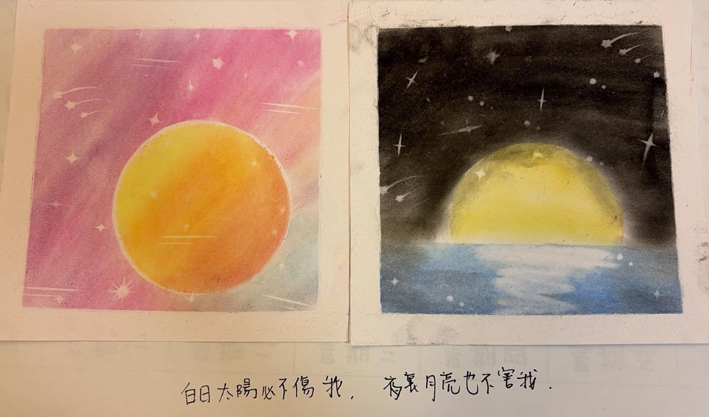
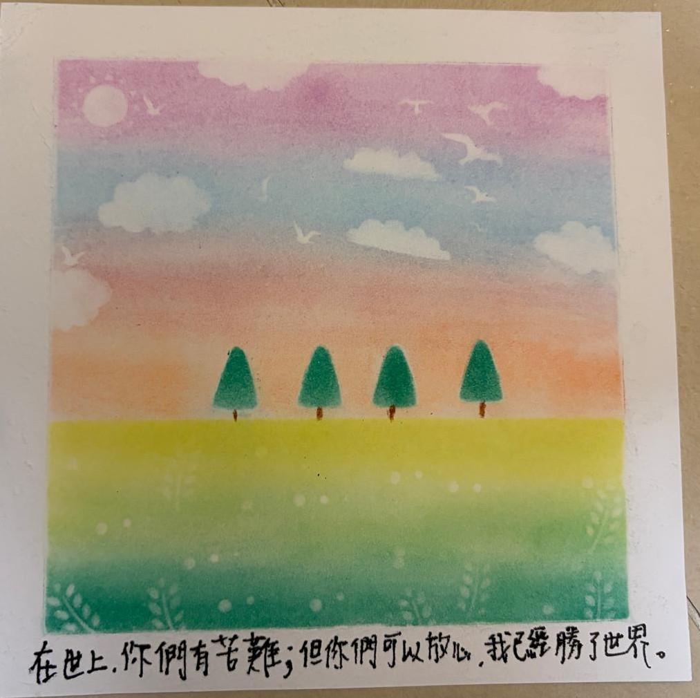
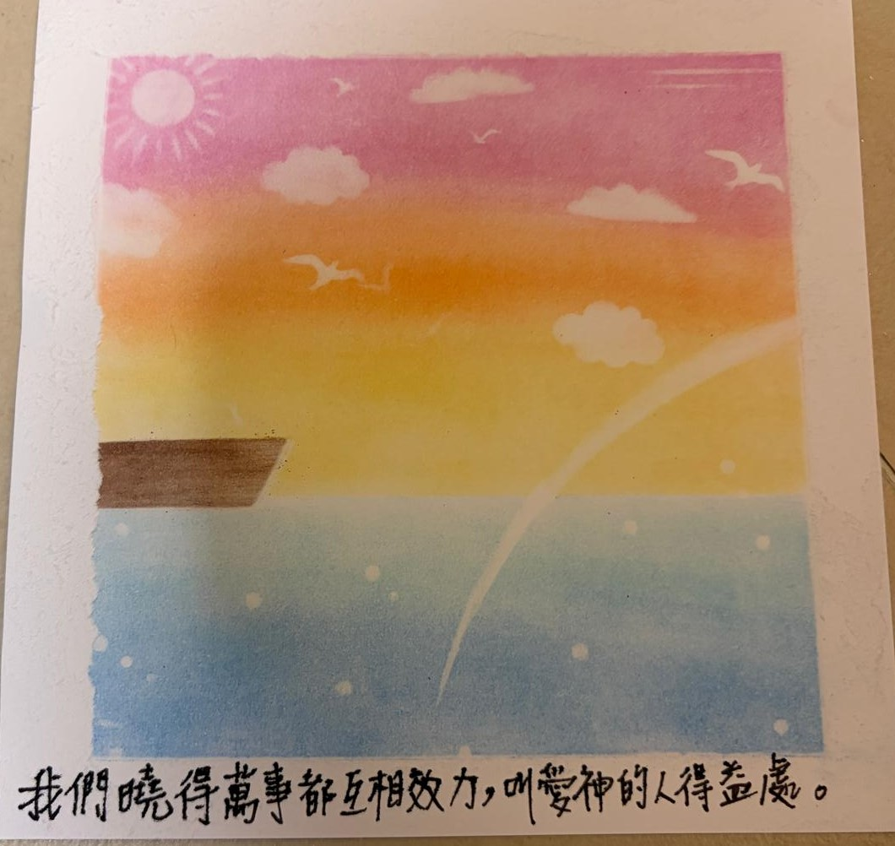
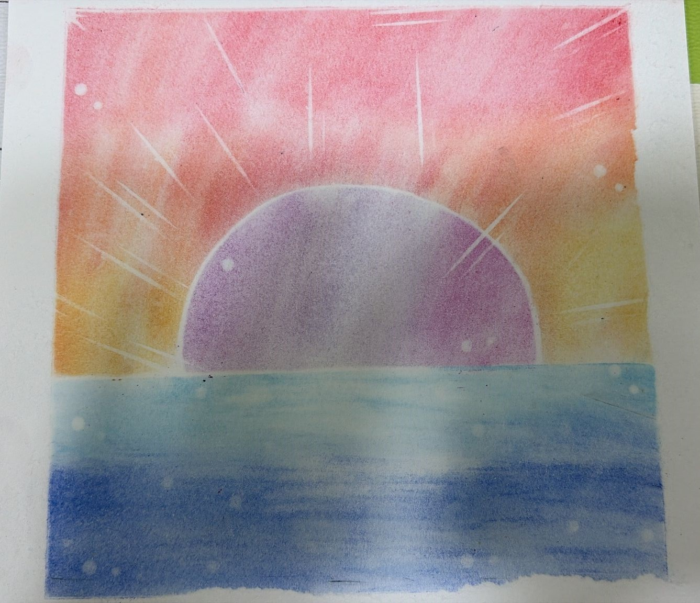
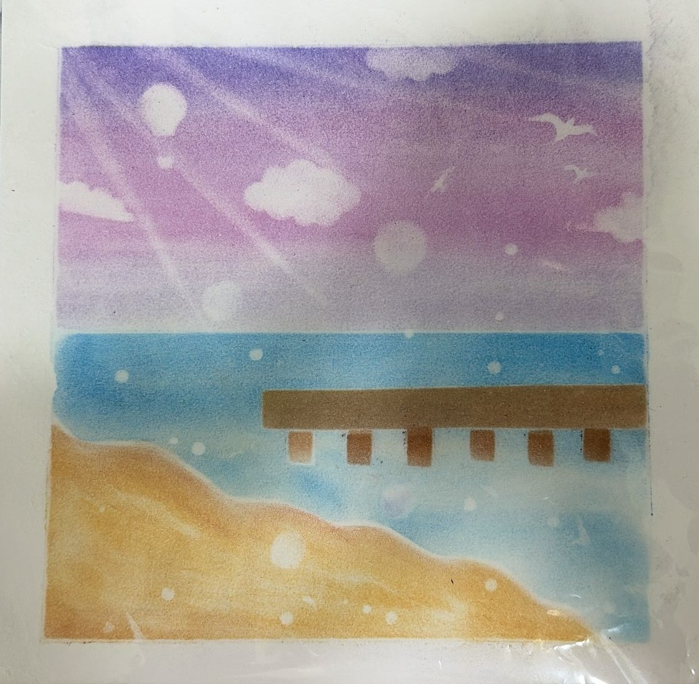
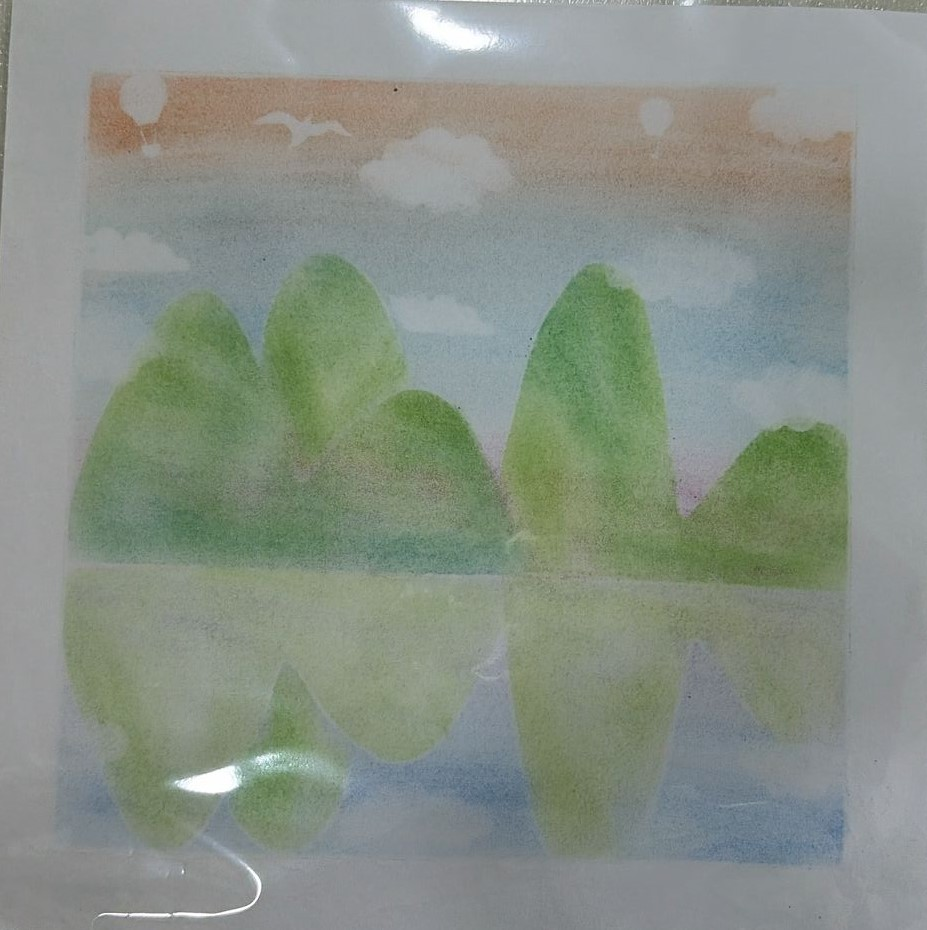
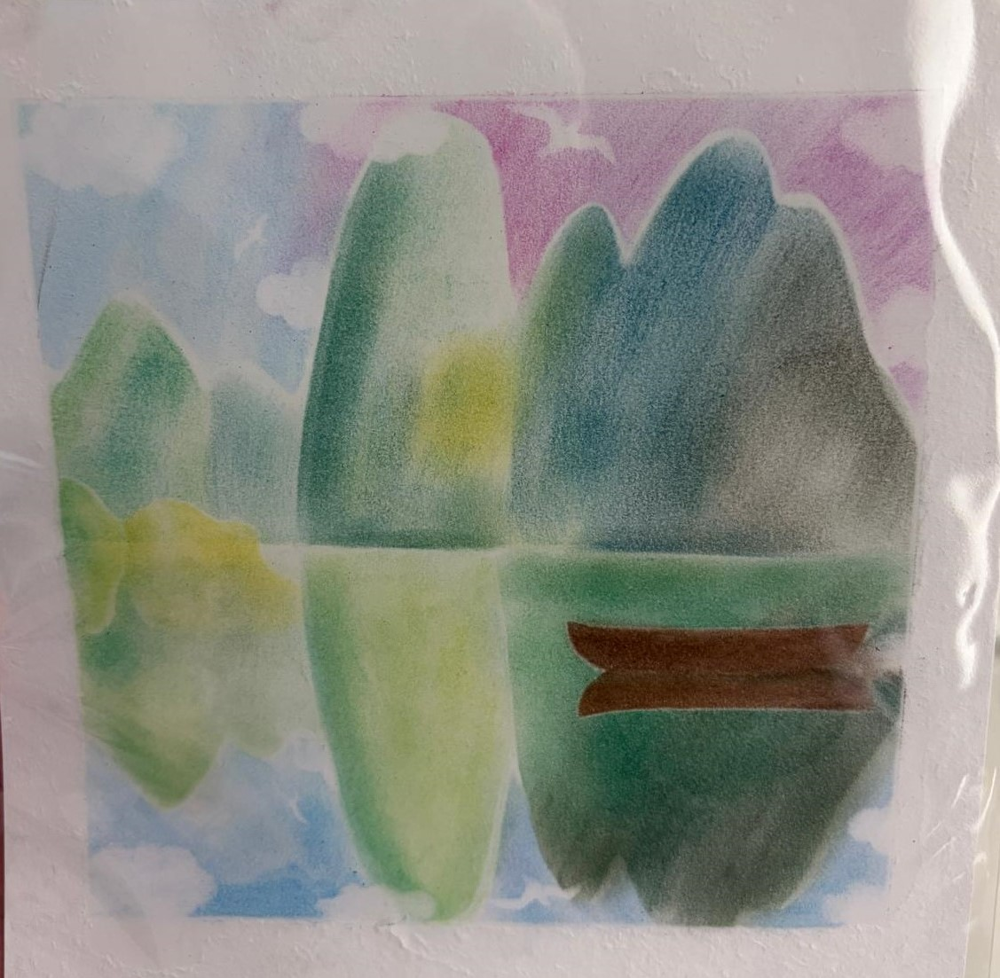
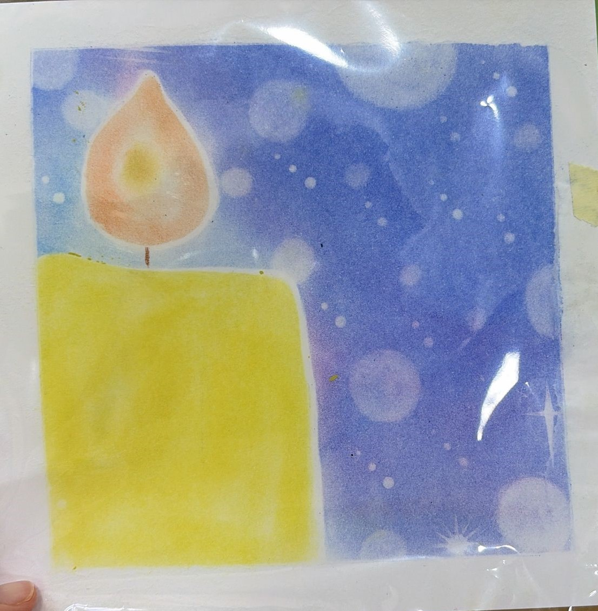
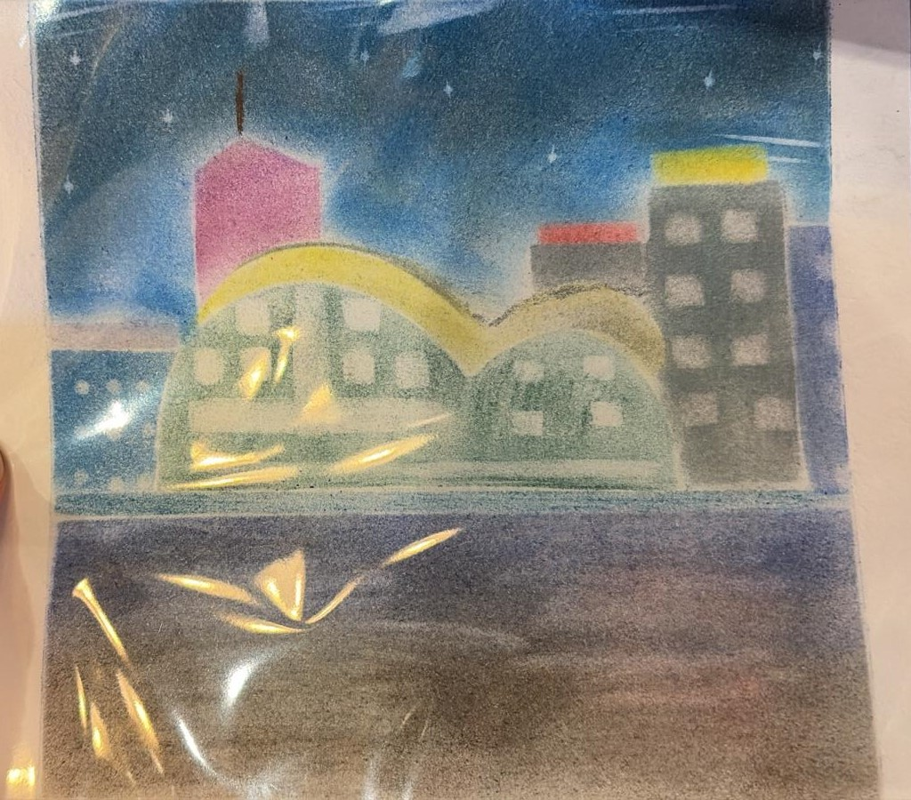

3月13日
（謝謝妳醉了仍然想用畫作鼓勵我）

（謝謝妳醉了仍然想用畫作鼓勵我）
（妳特地把工具找了出來）


（畫了不止一幅好美的畫, 妳用袋細心地封好）
（原來你還留了一幅, 怕我還被同一件事纏繞）


（妳新畫了一幅深色背景襯托黃色的月亮。海是比天空更深沉的）
（妳說怕我還是煩躁。所以這畫表達的是peaceful的感覺）


（是美麗的桂林。妳說前一晚夜歸了, 但是怕我處理事情的時候又勾起這份擔心）
（妳前一晚睏了,但是見我對桂林山水有好感,還是希望這幅畫能讓我舒服一點）


（是很美的燭光。但妳很有趣地叫我留意爛掉的畫框）
（妳工作雖然經歷不少辛苦, 但希望我可以留意眼下美麗的風景。嗯, 的確有讓我留意到呢）
